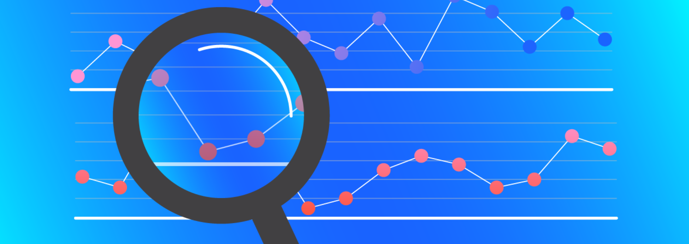

R - Assignment 4
Instruction
Download the Rmarkdown file at this link
Open the submission file using Rstudio and write R codes below each question to answer the question. To insert a code chunk, use Ctrl + Alt + I.
Once you are done answering all the question, Knit the file (Use: Ctrl + Shift + K or Click to Knit -> Knit to pdf) to convert the Rmarkdown file into a pdf file.
Submit the pdf/Word to Canvas.

Question 1.
Working with the inflation data. The dataset contains monthly observations in the US from 1950-2 to 1990-12. A time series containing :
pai1: one-month inflation rate (in percent, annual rate)
pai3: three-month inflation rate (in percent, annual rate)
tb1: one-month T-bill rate (in percent, annual rate)
tb3: three-month T-bill rate (in percent, annual rate)
cpi: CPI for urban consumers, all items (the 1982-1984 average is set to 100)
Do the follows.
Create a time series of three-month inflation rate
Plot the series and the ACF to check if the series is stationary
Create the differenced series and check for stationary
Fit the MA(1) model to the series and plot the fitted series
Make prediction on the next value of three-month inflation rate
Fit the AR(1) model to the series and plot the fitted series
Make prediction on the next value of three-month inflation rate
Question 2.
Consider the Consumption data. This is a quarterly data on consumption and expenditure in Canada. The series started from Quarter 1 in 1947.
The time series containing :
yd: personal disposable income, 1986 dollars
ce: personal consumption expenditure, 1986 dollars
Let \(y_t\) be the personal consumption expenditure series. Assume that the differenced series of \(y_t\) is stationary.
Use the MA(1) model to fit the differenced series and make a prediction on the next value of \(y_t\) .
Plot the fitted \(y_t\) and \(y_t\) on the same graph.